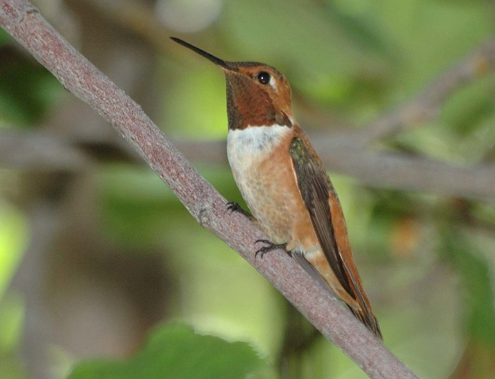
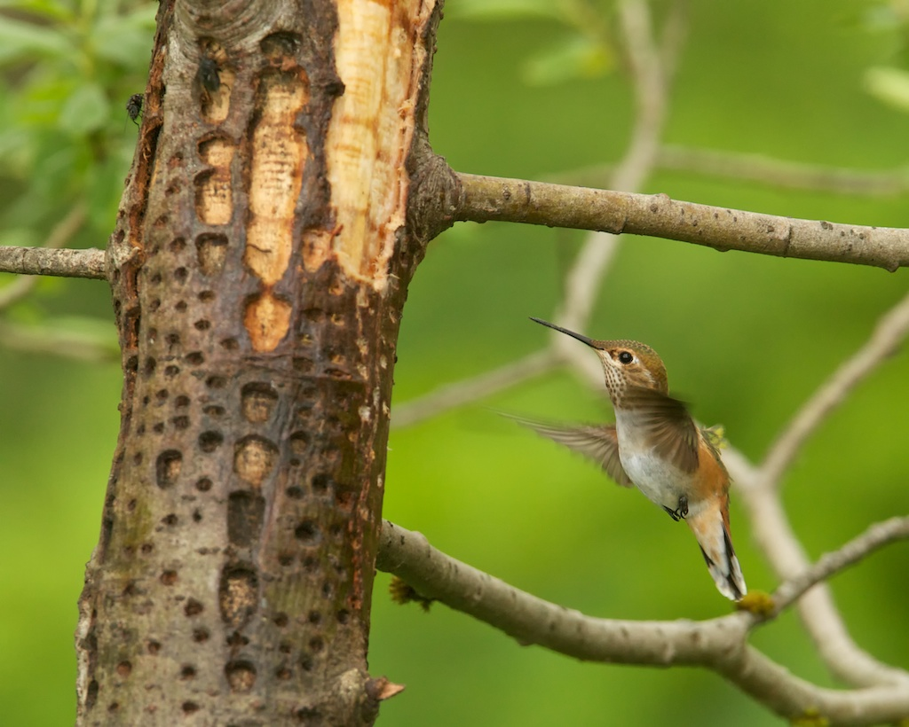
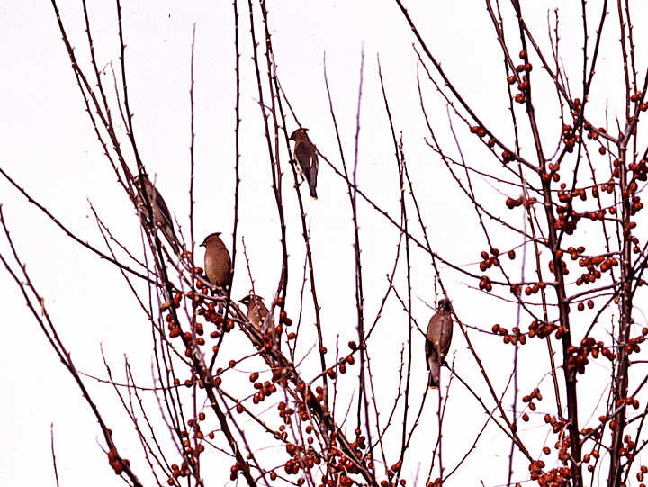
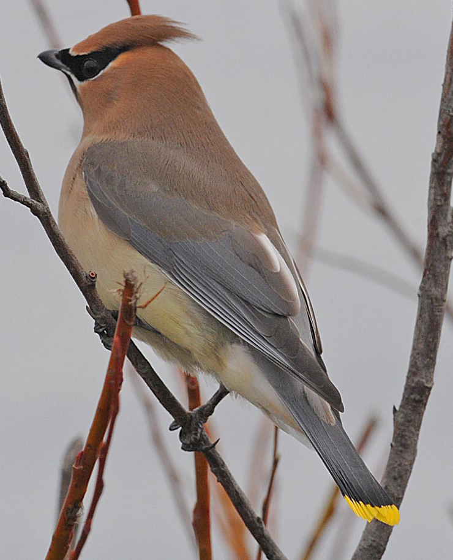
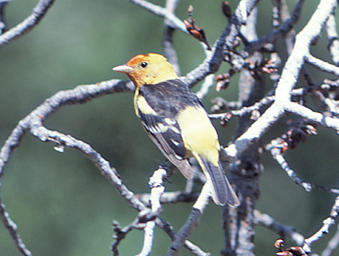

Vashon's
Visiting Songbirds
Beginning with gratitude...
-
Dennis Paulson
- Netta Smith, Gregg Thompson, Steve Mlodinow, Damon Calderwood, and a few others
- Alan Huggins (BBEAR & EOB classes)
-
Ed Swan & his book The Birds of Vashon Island
- innumerable birders, photographers & members of the Vashon nature community
- Bird Songs of the Pacific NW CD (Geoffrey Keller & Gerrit Vyn)
- Sibley Guide to Birds (David Sibley)
- a plethora of wonderful online resources
- Ezra Parker

easy!
uh oh... what now?
The 5 Ws of Bird Identification
Who?
which type of bird?
What?
behavior / feeding method / song?
Where?
location and habitat?
When?
time of year?
Why (not)?
why is it not the most abundant, common species?
Who? which type of bird?
unsure, but all dark above (hard to see color) & all white below; long, angular wings
What? behavior / feeding method / song?
fast, gliding flight with occasional rapid turns and banks, occasionally dipping down and skimming the surface of water (swallow? but which one? Violet-green or Tree?)
Where? location and habitat?
Mukai Pond, Island Center Forest, Vashon; riparian habitat (correct for VG or Tree)
When? time of year?
late March (check distribution list!)
Why (not)? why is it not the most abundant, common species?
observed field marks + data collected = most likely ID
probable Violet-green Swallow

Family Trochilidae
(Hummingbirds)
- not a songbird (aka, passerine, oscine, or perching bird)
- active & acrobatic in flight; can fly backwards, forwards, upside down; body can fly positioned vertically vs. horizontally
- almost always hovers while feeding
- very long bill & tongue for specialized feeding of nectar at flowers; also feeders, sap from sapsucker wells & tiny insects
- iridescent plumage
- very small legs & feet (Apodiformes); used for scratching or perching, not walking
- 2 species recorded on Vashon (Anna's is resident)
Rufous Hummingbird
Selasphorus rufus

Rufous Hummingbird
- orange-red gorget (throat) & rufous plumage
- male performs courtship display for female; his wing feathers are modified to produce a trill or buzz
- wide range of suitable habitats
-
earliest arrivals from Mexico in early February
- arrival may coincide with salmonberry/currant blooming
- latest records in late September
Rufous Hummingbird
call: "chase" call is a buzzy zeee-zeee-zeee-chuppity-chuppity-chup also, chip notes
aerial display: male dive display with wing buzz is a stuttering, humming dit-dit-dit-deeer
Rufous Hummingbird
male
Rufous Hummingbird
female
Rufous Hummingbird

Rufous Hummingbird
Rufous Hummingbird

Family Tyrannidae
(Flycatchers)
- most species have a plain coloration: brown, gray or yellowish with white markings
- many have a slightly crested appearance
- typically exhibit an upright posture
- look for behaviors such as persistent wing-flicking and/or tail pumping (bobbing)
- wide, flattened bill for insect catching & well-developed rictal bristles
- diet is almost exclusively insectivorous (highly unlikely at feeders)
- NA species usually employ a "sallying" feeding method -- fly up directly to catch an insect from perch, then return to same perch
- 7 species recorded on Vashon (all migrants)
Olive-sided Flycatcher
Contopus cooperi
Olive-sided Flycatcher
- largest of our flycatchers
- relatively short tail; dark head/flanks constrast with white throat/belly ("vested" appearance); lacks wing bars
- utilizes clearings, forest openings and edges for hunting
- often stake out territorial boundaries by calling repeatedly from the top of a snag or tall tree; habit of perching conspicuously is good ID clue
- earliest arrivals from Central or South America in early May
- latest records in early September
Olive-sided Flycatcher
song: a penetrating, whistled quick-free-beer
Ed's book transcribes as whut, whee year
dawn song & atypical song:
call: pip-pip-pip call notes & twitter
Olive-sided Flycatcher
Olive-sided Flycatcher

Western Wood-Pewee
Contopus sordidulus
Western Wood-Pewee
- dark head & generally dusky & drab coloration; very long wings
- does not generally flick or bob tail like Empidonax sp.
- open forest, forest edge & riparian woodlands provide suitable habitat
- earliest arrivals from South America in late April
- latest records in late September
Western Wood-Pewee
song: a burry, descending pee-er
dawn song: a continuous, burry a-phee-a-reet, pee-er, a-phee-e-reet, pee-er...
call: a burry eeeep
Western Wood-Pewee

Western Wood-Pewee
Western Wood-Pewee

Willow Flycatcher
Empidonax traillii

Willow Flycatcher
- brownish in coloration; weak eyering; shorter-winged than Pewee
- primarily eats flying insects; occasionally eats berries
- prefers brushy vegetation in wet areas, esp. riparian willow thickets
- probably breeds here, but have yet to confirm with evidence
- earliest arrivals from Mexico, Central or South America in mid-May
- latest records in late September
Willow Flycatcher
song: primarily FITZ-bew phrases, along with occasional similar sounding fizz-bew and creet notes
reminiscent of a sneeze, or perhaps an expletive
call: common call is a thick, dry whit
Willow Flycatcher

Willow Flycatcher
Willow Flycatcher

Pacific-slope Flycatcher
Empidonax difficilis

Pacific-slope Flycatcher
- easily the most abundant flycatcher on Vashon
- yellow or greenish coloration; teardrop-shaped eye ring is somewhat distinctive
- coniferous or deciduous forest; wooded lots
- typically remains hidden in dense & shady canopy, yet calls loudly & repetitively
- cavity nester, but known to nest on porches & above light fixtures
- earliest arrival from Mexico in late March
- latest records in late September
Pacific-slope Flycatcher
song: composed of 3 elements: pe-SEET, ptick, and seet
dawn song: delivered in a rapid, continuous fashion
call: position call (can be given by both sexes) is strongly up-slurred psea-eet; similar to a human attention whistle -- e.g., hailing a cab
Pacific-slope Flycatcher

Pacific-slope Flycatcher

Pacific-slope Flycatcher

Family Vireonidae
(Vireos)
- dull coloration (in Latin, "little green bird")
- feed by gleaning (non-aerial method of eating prey from foliage and other substrate)
- bill cylindrical (unlike flycatchers) and slightly hooked (unlike warblers)
- songs are repetitive and persistent
- 4 species recorded on Vashon (Hutton's is resident)
Warbling Vireo
Vireo gilvus
Warbling Vireo
- can be inconspicous and hard to locate; much easier to learn its song
- pale lores & supercillium (eyebrow) are only notable markings
- distinguished from Ruby-crowned Kinglet, Hutton's & Cassin's Vireo by lack of wingbars
- habitats include bushy, deciduous growth, often in riparian settings
- nest often hosts Brown-headed Cowbird eggs
- earliest arrivals from Mexico or Central America in early April
- latest records in late September
Warbling Vireo
song: a husky undulating, rapid, run-on warble
call: a harsh or buzzy, nasal eeeee-ah; also a soft, dry vit
Warbling Vireo

Warbling Vireo

Warbling Vireo
Family Hirundinidae
(Swallows)
- small bill with wide, gaping mouth
- streamlined bodies & long, pointed wings
- aerial insectivores -- feed by swooping and coursing over any fairly open area where insects are abundant
- on Vashon, that includes areas around the docks, ponds, beaches, open meadows & fields
- most species are loosely to strongly colonial in nesting strategy; enclosed nests (mud, burrows, nest boxes, crevices)
- prolonged, adverse weather events can be fatal for young & immature
- 6 species recorded on Vashon (all migrants)
- numbers are few, but Northern Rough-winged Swallow nest in the cliffs/banks at Pt. Robinson, KVI & Raab's Lagoon; Tree Swallow in boxes near water; and Cliff Swallow on man-made structures
Purple Martin
Progne subis
Purple Martin
- largest swallow; solid bluish or purplish coloration in males (only dark-bellied species)
- typically feed higher than other swallows & further out over open water, but calls can often be heard
- as recently as the 1980s, not easily found in WA state (possible reasons include: adverse weather events, lack of historical nesting sites & competition from introduced cavity nesters)
- in the 1990s, Rich Siegrist installed nest boxes on pilings (Lisabuela, Tramp/Ellisport, Sylvan Beach, Fern Cove & Dockton)
- hosted anywhere from 30 - 70 nesting pairs, currently around 50
- earliest arrivals from South America in early April
- latest records in late September
Purple Martin
song: a rich, liquid warble of bubbling notes interspersed with grating or clicking sounds
call: alarm call is a burry zeeert
Purple Martin
male
Purple Martin
female
Purple Martin
Purple Martin


Barn Swallow
Hirundo rustica
Barn Swallow
- midnight blue above, with orange or buff underparts; rusty throat & forehead patches
- noticeably longer forked tail than other swallow species
- nests are made of mud pellets and some fibrous material
- orginally nested in caves & natural crevices, but by mid-20th century, there was a near complete shift (99% in WA) to using man-made structures (eaves, bridges, docks, etc.)
- require nearby insects & mud source + suitable man-made structure + humans that are amenable to nesting
- earliest arrivals from Central or South America in early April
- latest records in mid-October
Barn Swallow
song: a long sequence of continuous, squeaky warbles punctuated by dry, grating rattles
call: commonly heard call is a husky vit or vit-VEET
Barn Swallow

female & male
Barn Swallow
Barn Swallow

Barn Swallow

Barn Swallow
immature
Violet-green Swallow
Tachycineta thalassina
Violet-green Swallow
- likely our most abundant swallow on Vashon
- all white below & (as name implies) males are a mixture of violet-green hues above
- short-tailed, causing wings to extend well beyond tail tip
- historically, nested in natural cavities & crevices, but have adapted very well to using nest boxes (espcially near water)
- along with Barn Swallows, can congregate in large numbers post-breeding in the late summer/early fall
- earliest arrivals from CA, Mexico or Central America in early March
- latest records in late October
Violet-green Swallow
call: typical vocalization, given singly or in pairs, is a sharp, chirping chee or chee-chee
(during breeding season at dawn, long series of these calls are given in flight near nesting areas)
call & song: chee-chee calls and songs
call: chee calls and up-slurred creaky notes
Violet-green Swallow


Violet-green Swallow
Violet-green Swallow

Family Turdidae
(Thrushes)
- family includes several iconic species, perhaps best known for their singing ability
- plump, upright birds often seen feeding on or near the ground
- foraging generalists, eating arthropods, worms & fruit (spreading seeds of many plants)
- can be territorial during breeding; several species form large flocks in migration/winter
- 7 species recorded on Vashon (Varied Thrush & American Robin are resident)
Swainson's Thrush
Catharus ustulatus
Swainson's Thrush
- very vocal, far more easily heard than seen; songs given at dawn/dusk are a symphonic delight
- long-legged; uniformly gray-brown back & wings; light breast with brown spots and a buffy wash; "spectacled" appearance
- no difference in plumage between male & female
- very similar in appearance to Hermit Thrush, but only brief overlap in status -- pay attention to back/wing color & spotting
- generally shy & solitary; skulking in low foliage or branches of shady understory while hunting insects
- also eat fruit which offers the best chance for sighting; look for characteristic hover gleaning & wing/tail flicking
Swainson's Thrush
song: a rolling, flute-like song which spirals upwards; po po tu tu tu tureel tureel tiree tree tree
call: a clear, emphatic queep; most frequently given in flight
call: a liquid quip or pwip; given in response to an intruder or predator to express alarm or to distract away from a nest
call: a nasal whit-burrr call is also given as an alarm or distraction call
Swainson's Thrush
Swainson's Thrush

Swainson's Thrush

Swainson's Thrush
Swainson's Thrush vs. juvenile American Robin
Family Bombycillidae
(Waxwings)
- specialized berry-eaters (frugivores)
- switch to sallying or gleaning for insects in summer while breeding or when fruit becomes scarce; often near water
- due to berry-eating lifestyle, they are gregarious & non-territorial; forming strong, cohesive flocks which typically take off together, making abrupt unison turns in flight
- Cedar is the only species recorded on Vashon; Bohemian are northern breeders of the boreal forest, only very rarely seen in western WA
Cedar Waxwing
Bombycilla cedrorum

Cedar Waxwing
- plump brownish birds with a noticeable crest, dark eye mask and yellow tail tip
- the resemblance of red modified tips of secondary feathers to droplets of wax gave them their common name; color comes from carotenoids in diet
- no difference in male & female plumage
- engage in wonderful courtship ritual of passing an object back and forth between their bills
- there is a resident population which is augmented by breeding summer migrants
- one of the latest species to breed, presumably timing fledging young with the abundance of berry production
Cedar Waxwing
call: typical call is a high-pitched, drawn-out, thin, hissy sreee
call: another typical call is a high-pitched, rapidly trilled series of clear notes
Cedar Waxwing
Cedar Waxwing
Cedar Waxwing
immature
Family Parulidae
(New World Warblers, aka Wood-Warblers)
- an active group of small to medium-sized, brightly-colored, thin-billed birds
- plumage tends to be dominated by yellows and olives, but highlighted with a multitude of other colors
- partial to wooded habitats and far more diverse and prolific in eastern NA and northern boreal regions
- primary feeding method is gleaning or sallying for insects; occasionally eat berries, sap, nectar or suet
- generally territorial and solitary, but may form loose mixed flocks during migration
- 13 species recorded on Vashon (Yellow & Yellow-rumped Warbler are also potential breeders)
Orange-crowned Warbler
Oreothlypis celata
Orange-crowned Warbler
- drab gray, yellow or olive plumage is notable for lack of markings; orange-patch on crown is usually not visible
- no reliable difference in male & female plumage
- look for eye stripe, broken eye ring, sharply-pointed bill & faint streaking on underparts to distinguish from females of other species
- primarily feeds by gleaning insects from foliage or flycatching in dense shrubs and low trees
- supplements diet with berries, seeds, sap & nectar; will visit suet feeders, especially in winter
- song varies more than most warblers; individual males can reportedly be uniquely identified
Orange-crowned Warbler
song: typically sputtery, loose trills that diminish in energy and pitch at some point; tititititititititututu; example of two-parted trill
song: example of both one & two-parted trills; also, faster trills
call: distinctive call is a brief, high, sharp chip; also, other sputtering notes & a rising seet
Dark-eyed Junco:
Orange-crowned Warbler
Orange-crowned Warbler
Common Yellowthroat
Geothlypis trichas
Common Yellowthroat
- male has distinctive black mask with a white border at the top; bright yellow below; olive back & wings
- female is olive brown overall with a yellowish throat; lacks facial markings
- easy to hear, but spends much of its time skulking and hidden; singing males may perch more visibly
- mostly forage on or near the ground, gleaning a wide array of insects & spiders; occasionally seeds
- suitable habitat for foraging & breeding includes most open areas with dense, low vegetation
- on Vashon marshes/fields w/ cattails are most common; may sometimes inhabit nearby Scotch Broom patches
Common Yellowthroat
song: though variable in pitch, rate of delivery and number of syllables, usually described as wichity wichity wichity or wich-y wich-y wich-y
call: distinctive buzzy tchat, sounding like an arching electrical spark
Common Yellowthroat
male
Common Yellowthroat
female
Common Yellowthroat
immature
Black-throated Gray Warbler
Setophaga nigrescens
Black-throated Gray Warbler
- a western speciality, not found in eastern NA
- gray back with white face, underparts & wing bars; black mask, throat, crown & striping on chest; yellow square in front of eye
- female is grayer overall & lacks black throat
- feed on insects (especially caterpillars) by gleaning foliage, often high in tree tops
- breeding habitat is open coniferous & mixed forest with a brushy understory; also, in dry open oak forests & in chaparral
- despite being fairly common and easily approachable, very little scientific data has been collected
Black-throated Gray Warbler
song: in general, a distinct buzzy quality which often includes an emphatic ending; zeea zeea zeea ZEE zoo
song: also buzzy, but this example demonstrates a different structure, with notes ascending the scale
call: a flat chit
Black-throated Gray Warbler
male
Black-throated Gray Warbler
female
Black-throated Gray vs. Yellow-rumped Warbler
Black-throated Gray Warbler vs. chickadees
Wilson's Warbler
Cardellina pusilla
Wilson's Warbler
- underparts entirely yellow; olive-green back, tail & wings; yellow face with prominent black eye; male has unique black cap
- female is a drabber version of the male
- feeds by gleaning foliage & flycatching in brushy areas or shrub thickets in riparian woodlands
- often seen lower in the understory than other warbler species; look for persistent tail flip
- insectivorous, but will occasionally eat berries; reported to come readily to water features on Vashon
Wilson's Warbler
song: average of 10 sharp, staccato whistled notes -- chchchchchchchchchch -- with last few usually lower and faster
song & call: example of two part song; chip calls
Wilson's Warbler
male
Wilson's Warbler
female
Wilson's vs. Yellow Warbler
Family Emberizidae
(New World Sparrows)
- very large and variable group of birds found in nearly every kind of habitat; bill size & shape largely dictates seed diet
- often brown or gray with a streaked appearance
- males & females are often indistinguishable; any differences in plumage usually subtle
- most glean insects from the ground or low vegetation while breeding; forage seeds on ground in winter
- most territorial while breeding; may form large flocks in winter
- finding open feeding areas adjacent to "refuge cover" is key to avoiding predation; flight is typically brief and low to the ground
- 12 species recorded on Vashon (resident breeders include Song Sparrow, Spotted Towhee & Dark-eyed Junco); Chipping Sparrow is a recent addition
Savannah Sparrow
Passerculus sandwichensis
Savannah Sparrow
- dark eyeline & moustachial markings; streaked crown, back & breast with dark central spot; slightly peaked head
- superficially similar to Song Sparrow, but yellow wash on lores is distinctive; also, look for pinkish bill & crisper, darker streaking
- no reliable difference in male & female plumage
- ground feeder that eats insects while breeding & seeds in the winter; tiny crustaceans in shoreline habitat
- on Vashon, preferred breeding habitat is open, wet fields with tall grass (Wax Orchards, Old Mill & Monument Rd.); look for them singing on top of fence posts
- can also be observed in migration along beaches (KVI & Pt. Robinson)
Savannah Sparrow
song: rather weak, insect-like series beginning with several introductory notes and ending with an extended buzzy trill; ti ti ti tseeeeeee tisoooo
call: one example is a sharp chip
Savannah Sparrow
Savannah Sparrow
Savannah vs. Song Sparrow
White-crowned Sparrow
Zonotrichia leucophrys
White-crowned Sparrow
- relatively stocky, large sparrow with distinctive black-and-white striped crown, streaked back and grayish breast/belly
- immature birds often seen in winter months; same pattern on head, but in shades of of brown
- no reliable difference in male & female plumage
- primarily ground feeder whose diet includes seeds, grains, fruits & insects
- though most breeders leave in the fall months, this species can be seen year-round due to wintering flocks
- on Vashon, suitable habitat is pretty much anywhere other than deep forest; often visit seed feeders in fall/winter months
White-crowned Sparrow
song: variable song contains clear whistles, buzzy notes and trills that slightly rise and fall in pitch
song: another variation
call: common call is a sharp pink
White-crowned Sparrow
White-crowned Sparrow
immature
White-crowned vs. Chipping Sparrow
White-crowned vs. Golden-crowned Sparrow
Family Cardinalidae
(Cardinals, Grosbeaks & Allies)
- medium to large songbirds of open habitats & woodland edges
- often display striking sexual dimorphism -- cryptic females & males with some of the most colorful plumage of NA birds
- somewhat unusually, many males do not aquire their full adult plumage within their first year; F-type males
- many have robust and conical bills (some quite large) specialized for seed eating
- 3 species recorded on Vashon (look for Lazuli Bunting in May!)
Western Tanager
Piranga ludoviciana
Western Tanager
- "A clear look at a male Western Tanager is like looking at a flame"... males have orange-red heads, bright yellow below and on rump, with black wings and mantle
- red coloration is from a rare pigment called rhodoxanthin, speculated to be from insects in their diet
- females are a duller yellow; both sexes display two wing bars
- stocky & larger than a warbler; bill of medium thickness -- thinner than a seed-eater, but thicker than an insectivore
- specialized fruit eaters (frugivores) in their wintering ranges
- in breeding season, they are primarily slow, methodical treetop-foragers, gleaning & flycatching insects
- preferred habitat is open coniferous or mixed coniferous/broadleaved forests
Western Tanager
song: reminiscent of robin, but the burry, undulating phrases are much hoarser and lower-pitched
call: usually rendered as pit-er-ink or pri-di-dit
song & call:
American Robin:
Western Tanager
male
Western Tanager
male
Western Tanager
female (bright)
Western Tanager
female (drab)
Western Tanager
immature
Black-headed Grosbeak
Pheucticus melanocephalus
Black-headed Grosbeak
- medium-sized bird with short, thick bill
- male has an all black head, back, wings & tail; rusty-orange breast, nape & rump; noticeable white patches on wings and outer tail feathers (visible in flight)
- female is drabber in coloration, with streaked breast, dark crown & a white line above the eye and below the cheek; yellow under-wing linings are visible in flight for both sexes
- first-year males are patterned like females but have more orangey underparts
- preferred habitat is mixed coniferous or deciduous woods
- usually solitary, feeding in upper levels of trees on insects and fruits (elderberry grows at a good height for viewing!)
- often seen on Vashon visiting seed feeders, especially immatures
Black-headed Grosbeak
song: melodious, sweet series of slurred, whistled phrases (similar to robin's song, but higher-pitched, huskier and delivered at a faster rate)
call: distinctive sharp spic
American Robin:
Black-headed Grosbeak
male
Black-headed Grosbeak
Black-headed Grosbeak
female
Black-headed Grosbeak vs. American Robin
Black-headed Grosbeak vs. Spotted Towhee
Family Icteridae
(Blackbirds & Allies)
- group includes blackbirds, orioles, cowbirds, grackles & meadowlarks; all have a strong, straight, pointed bill
- much sexual dimorphism; male plumages are often predominantly black with iridescent, yellow, orange or red highlights
- wide range of nesting strategies, suitable habitat, and have mostly adapted well to human-altered areas
- wide range of food, inlcuding nectar, fruit, seeds & insects; those species that form mega-flocks can cause significant agricultural damage
- "gaping" is a unique adaptation; skull is configured for bill to be used forcefully to open gaps & obtain food
- there are 7 species recorded for Vashon (Red-winged Blackbird is resident)
Brown-headed Cowbird
Molothrus ater
Brown-headed Cowbird
- males are glossy black with dull brown heads; females are solid gray-brown with faint streaking and a lighter throat
- forage on ground for seeds or insects; also feeders; used to be strictly grassland habitat
- well known, and often maligned, for their strategy of parasitizing other birds' nests and relying on others to raise their young
- spends much time in trees displaying & searching for host nests
- some host birds have learned to recognize eggs and either eject them or build a new nest
- fledglings typically join up in loose flocks; on Vashon, can often be seen foraging on beaches with driftwood
- they are an "edge" species and forest fragmentation has greatly increased their negative impact
Brown-headed Cowbird
song: distinctive low gurgling note followed by a high, thin, up-slurred whistle
call: chatter call given by female is a rattling ch-ch-ch-ch-ch-ch